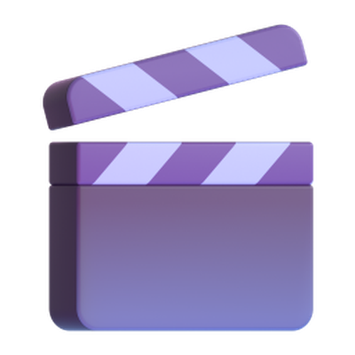

Guía · Clic por clic
Claude Code como tu editor de video
Los 6 pasos, sin saber programar: tú grabas y hablas, y Claude corta, pone subtítulos y gráficos.
Juan Liévano · @juanlievano1
[Lo resaltado] es lo que cambias tú.
Antes de empezar
Ojo
Claude Code necesita un plan pago: con el de 20 dólares al mes alcanzó para editar mis reels. ElevenLabs regala créditos, y cada video que transcribe gasta parte de ellos: revisa tu saldo. La primera vez reserva un buen rato; después solo repites los pasos 5 y 6.
Solo tienes que conseguir 3 cosas. Claude instala todo lo demás en el paso 3.
| Consigues tú | Para qué |
|---|---|
| Un computadorWindows o Mac. | Ahí viven tus videos y ahí trabaja Claude. |
| Un plan pago de ClaudeEl de 20 dólares al mes. | Para usar Claude Code, el que hace la edición. |
| Una cuenta de ElevenLabsRegala créditos al crear la cuenta. | Convierte tu voz en texto, palabra por palabra. Con eso, Claude sabe dónde cortar. |
| Instala Claude | Para qué |
|---|---|
| video-use | El editor: transcribe, corta, da color y arma el video. |
| FFmpeg | Hace los cortes y guarda el video final. |
| RemotionGratis para personas. Una empresa de 4 personas o más puede necesitar licencia: revísalo aquí. | Hace los subtítulos y los gráficos. |
| Python, Node.js y Git | Programas que las herramientas necesitan para funcionar. No los vas a tocar. |
| Palabra | Qué significa |
|---|---|
| Prompt | El mensaje que le escribes a Claude. Aquí ya están escritos: los copias y los pegas. |
| Clave | Un código privado que deja a Claude usar tu cuenta de ElevenLabs. |
| Skill | Un archivo con instrucciones que Claude sigue cada vez. Ahí queda guardado tu estilo. |
| B-roll | Las tomas de apoyo que tapan tu cara mientras tu voz sigue sonando. |
Paso 1 de 6
Abre Claude Code
- Entra a claude.com/download y descarga la app para tu computador.
- Instálala e inicia sesión con tu cuenta de Claude.
- Arriba, haz clic en la pestaña Code.
- Donde dice el entorno, escoge Local.
- Si estás en Windows y te pide Git, descárgalo de git-scm.com, instálalo con las opciones que trae y vuelve a abrir la app.
Usa la app, no el navegador
En el navegador, Claude trabaja en la nube y no puede ver los videos de tu computador. En Local, sí.
Listo cuando: estás en la pestaña Code, en Local, y ves un cuadro para escribirle a Claude.
Paso 2 de 6
Crea las carpetas
- En el escritorio de tu computador, haz clic derecho y crea una carpeta nueva. Ponle Mis videos.
- Entra a esa carpeta y crea otras 3, con estos nombres exactos: crudos, referencias y editados.
- En Claude Code, escoge Mis videos como la carpeta de trabajo.
Mis videos/ crudos/ lo que grabas, sin editar referencias/ los reels con la edición que te gusta editados/ los videos terminados
Listo cuando: Claude Code muestra que está trabajando en la carpeta Mis videos.
Paso 3 de 6
Saca tu clave e instala todo
Primero, la clave de ElevenLabs:
- Entra a elevenlabs.io y crea tu cuenta, o inicia sesión si ya tienes una.
- Abre la página de claves (Settings, API Keys).
- Haz clic en Create Key.
- En el nombre, escribe Editor de video.
- Deja encendido Restrict Key.
- Busca Speech to Text en la lista y cámbialo a Access. Es el paso que más se olvida: sin este permiso, la transcripción falla.
- Haz clic en Create Key y copia la clave de una vez. Solo se muestra esa vez. Si la pierdes, crea otra.
Tu clave es como una contraseña
No la publiques ni la dejes en una captura. El único sitio donde la pegas es el prompt de abajo.
Después, instala todo:
- Haz clic en Copiar y pega el prompt en el cuadro de Claude Code.
- Borra [PEGA TU CLAVE] y pega ahí tu clave. Dale Enter.
- Claude te va a pedir permiso antes de correr cada comando. Lee qué va a hacer y apruébalo.
- Si te dice que reinicies, cierra la app y ábrela en la misma carpeta.
Vas a editar mis reels verticales (1080x1920). Instala y deja funcionando: 1. video-use: https://github.com/browser-use/video-use (sigue su install.md) 2. FFmpeg 3. Remotion, para subtítulos y gráficos Mi clave de ElevenLabs: [PEGA TU CLAVE] Guárdala donde diga install.md. Si falta Python, Node.js o Git, instálalos. Al final dime qué quedó funcionando. No edites nada todavía.
Cuando termine, pega este para comprobar que todo quedó bien:
Revisa que video-use, FFmpeg, Remotion, Python y Node.js funcionen, y que mi clave de ElevenLabs haya quedado guardada, sin mostrármela. Arregla lo que falle y dime en palabras simples qué arreglaste.
Listo cuando: Claude te responde que todo funciona.
Paso 4 de 6
Enséñale tu estilo
Este es el paso que hace que tus videos se vean bien.
- Busca unos 5 reels con la edición que te gusta, mejor si son de la misma cuenta. Pueden ser tuyos: una sola cuenta le da un estilo más claro.
- Guárdalos en tu celular. En Instagram, abre el botón de compartir y toca Descargar, si te aparece. En TikTok, Compartir y Guardar video. Si no te aparece, escoge otro.
- Pásalos al computador (con cable, Drive o WhatsApp Web) y déjalos en la carpeta referencias.
- Copia este prompt, pégalo en Claude Code y dale Enter.
En referencias/ hay 5 reels con la edición que me gusta. Dime qué tienen en común: duración de cada plano, cortes, zooms, subtítulos, gráficos, b-roll, música, efectos y qué pasa en los primeros 3 segundos. Pregúntame lo que no tengas claro. Cuando te diga que sí, guárdalo como la skill mi-estilo-de-edicion.
- Lee lo que te responde y contesta sus preguntas. Si algo no es lo que quieres, díselo ("los subtítulos más grandes", "sin emojis").
- Cuando estés de acuerdo, escríbele: Sí, guárdala.
Copia el estilo, no el video
Esos reels son solo para que Claude los estudie. No publiques nada de ellos: ni las tomas, ni la música, ni la marca de otra persona.
Listo cuando: Claude te confirma que guardó la skill mi-estilo-de-edicion.
Paso 5 de 6
Edita tu primer video
- Graba en vertical. Si te equivocas, repite la frase y sigue: Claude escoge la mejor toma de cada una.
- Pasa el video al computador y déjalo en la carpeta crudos.
- En el selector de modelo de Claude Code, escoge el más potente que te aparezca (hoy, Opus 5.5).
- Copia este prompt, pégalo y dale Enter.
Edita el video que está en crudos/ con video-use y la skill mi-estilo-de-edicion. Antes de cortar, muéstrame las tomas, el gancho, los gráficos, el b-roll y la música, y espera mi sí. Guarda el video final en editados/.
- Claude te muestra el plan antes de cortar. Léelo y responde sí, o dile qué cambiar.
- Espera y aprueba lo que te pida. Deja la app abierta mientras trabaja.
- Abre la carpeta editados y mira el video.
¿No tienes tomas de apoyo ni música? Agrégale esto al prompt: "Busca el b-roll en Pexels y la música y los efectos en Pixabay". Las dos páginas son gratis.
Listo cuando: tienes el video en la carpeta editados.
Paso 6 de 6
Corrige y guarda
La primera versión no te va a gustar. Para eso es este paso.
- Mira el video en el celular, que es donde lo va a ver la gente.
- Dile a Claude qué cambiar, con tus palabras. No hay línea de tiempo que tocar. Si es en un punto exacto, dile el segundo: "En el segundo 12, corta directo a la frase donde digo...".
- Repite hasta que te guste. Tienes ideas en la tabla de abajo.
- Cuando lo apruebes, pega este prompt. No te lo saltes: es lo que hace que el próximo video salga mejor desde el principio.
Ya lo aprobé. Guarda en la skill mi-estilo-de-edicion todo lo que te corregí en este video, para que el próximo salga así desde el principio. Muéstrame qué agregaste.
Desde el segundo video solo repites los pasos 5 y 6. Lo que le corriges hoy, en el próximo video ya lo sabe.
Correcciones que vale la pena pedir
Salen de editar reels reales con este proceso. Cópialas tal cual.
| Si pasa esto | Dile esto |
|---|---|
| Las frases casi se pisan | Deja 0,3 segundos de aire entre frases, y menos en las comas. |
| Los zooms marean | Zooms pequeños y suaves, centrados en mi cara. Nunca más de 15%. |
| Los subtítulos tapan la cara o no se leen | Bájalos a la altura del pecho. Mide que no caigan sobre una zona blanca. |
| El subtítulo no dice lo que suena | Transcribe la voz final y compárala palabra por palabra con los subtítulos. |
| Se nota que estás leyendo | Revisa mis ojos en cada plano de cara. Si miro abajo, cambia de toma o tápalo con b-roll. |
| La voz y la imagen no coinciden | Mide la sincronía del audio en varios puntos del video, también al final. |
| La música compite con la voz | Déjala 26 dB por debajo de la voz. |
| El b-roll no dice nada | Cada toma tiene que ilustrar la frase que suena encima, no el tema en general. |
Si no tienes referencias
Usa esto en vez del paso 4.
Copia el prompt, cambia lo resaltado y dale Enter. Lo que no sepas, bórralo: Claude te lo pregunta.
Crea la skill mi-estilo-de-edicion con esto. Lo que falte, pregúntamelo antes de guardarla. Formato: 1080x1920, 30 fps, -14 LUFS. Cara a cámara: [porcentaje del tiempo y en qué momentos] Duración de cada plano: [por ejemplo, de 1 a 2 segundos] Cortes: sin pausas largas ni muletillas, con [0,3] segundos de aire entre frases. Zooms: [qué tan grandes y cuándo] Subtítulos: [fuente, tamaño, color, posición y palabras por línea] Colores: [tus colores] B-roll: cada toma ilustra la frase que suena. Primero el mío; si no hay, Pexels. Gráficos: [qué estilo te gusta] Música: [qué tipo], [26] dB por debajo de la voz. De Pixabay. Efectos de sonido: [cuántos y de qué tipo]. Nunca el mismo repetido. Primeros 3 segundos: [qué pasa en el gancho] Último cuadro: [por ejemplo, yo mirando a cámara] Reglas: confirma el plan antes de cortar. Antes de entregar, revisa cada corte y la sincronía del audio. Si no tienes claro algo, pregúntame con opciones.
Si algo falla
Primero pega esto. Casi siempre lo resuelve Claude.
Algo falló. Lee el último error, explícame en palabras simples qué pasó, arréglalo e inténtalo otra vez. Si necesitas algo de mí, dime exactamente qué.
Claude no encuentra mis videos
Revisa que estés en Local, que hayas escogido la carpeta Mis videos y que el video esté dentro de crudos.
Falla la transcripción o sale un error de ElevenLabs
Casi siempre es el permiso. Crea otra clave con Speech to Text en Access y pásasela a Claude. Revisa también que te queden créditos.
Dice que no encuentra FFmpeg o una herramienta
Cierra la app, ábrela en la misma carpeta y pega el prompt de revisión del paso 3.
El video no se parece a mis referencias
Claude no ve el video como tú: lo lee por partes. Dile qué es distinto con detalle ("el plano dura mucho", "el subtítulo es más grande") y guarda la corrección con el prompt 4.
Se me acaba rápido el uso de Claude
Editar video gasta bastante. Abre una conversación nueva para cada video y empieza con videos cortos.
Resumen
- Abre la app de Claude, en Code y en Local.
- Crea Mis videos, con crudos, referencias y editados.
- Saca tu clave de ElevenLabs con Speech to Text y pega el prompt 1.
- Deja 5 reels en referencias y pega el prompt 2.
- Deja tu video en crudos y pega el prompt 3.
- Corrígelo con tus palabras y, al aprobarlo, pega el prompt 4.